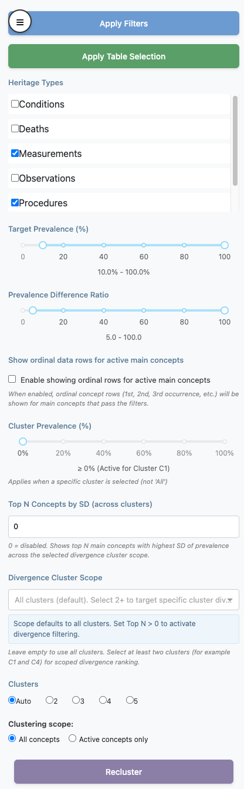

Sidepanel Filters and Controls
Source:vignettes/a09_sidepanel_controls.Rmd
a09_sidepanel_controls.RmdIntroduction
This vignette documents the left sidepanel controls in the Viewer and how they interact.
One important sidepanel dependency is the detected data mode. The
bundled lc500s example is in summary mode and includes
precomputed clustering results:
summaryStudyPath <- system.file("example", "st", "lc500s", package = "CohortContrast")
# Summary studies expose the available cluster counts up front.
CohortContrast::checkDataMode(summaryStudyPath)[c("mode", "has_clustering", "clusterKValues")]
#> $mode
#> [1] "summary"
#>
#> $has_clustering
#> [1] TRUE
#>
#> $clusterKValues
#> [1] 2 3 4 5This is why controls such as cluster count selection and summary-mode filtering can be enabled immediately when the study is loaded.

Important model: staged vs applied
Most sidepanel inputs are staged until you click Apply Filters.
- Moving sliders, changing heritage checkboxes, changing cluster count, or editing Top N does not immediately recalculate active concepts.
- Apply Filters is the commit action for filter state.
-
Apply Table Selection is the commit action for
manual
Showcheckbox edits made in the Dashboard table.
Action buttons
Apply Filters
Recomputes concept visibility from sidepanel criteria:
- Heritage Types
- Target Prevalence range
- Prevalence Difference Ratio range
- Ordinal-row visibility rule
Then plot-level filtering is applied (cluster prevalence / Top N by SD) when rendering the dashboard.
Sidepanel controls
Heritage Types
Domain-family include/exclude control.
- If a heritage is unchecked, its concepts are excluded.
- If all are unchecked, the app falls back to treating this as “all heritages selected”.
Target Prevalence (%)
Range filter on target cohort prevalence.
- Keeps concepts with
TARGET_SUBJECT_PREVALENCE_PCTinside the selected range.
Prevalence Difference Ratio
Range filter on contrast effect size.
- Keeps concepts with
PREVALENCE_DIFFERENCE_RATIO_DISPLAYinside the selected range.
Show ordinal data rows for active main concepts
Toggles whether ordinal rows are shown.
- ON: ordinal rows can be shown, but only for main concepts that are active.
- OFF: all ordinal rows are hidden.
Cluster Prevalence (%)
Minimum prevalence threshold within the currently selected cluster view.
- Active only when Dashboard view is a specific cluster
(
C1,C2, …). - Inactive when view is
All.
Top N Concepts by SD (across clusters)
Keeps only the top N main concepts with highest prevalence SD across clusters.
-
0disables this filter. - Applied last in filtering order.
- Ordinal rows are removed when this filter is active.
Divergence Cluster Scope
Optional cluster subset used by Top N by SD ranking.
- Empty = all clusters.
- Select at least two clusters for scoped divergence ranking.
Override and precedence rules
-
Apply Filters overrides manual table visibility
edits by recomputing
_showfrom filter criteria. - Apply Table Selection can be used after filtering to apply additional manual curation.
- Cluster count change alone does nothing until a clustering commit action occurs.
- Top N by SD is applied after other filters and can further shrink the visible concept set.
- Cluster Prevalence (%) applies only for a specific selected cluster view.